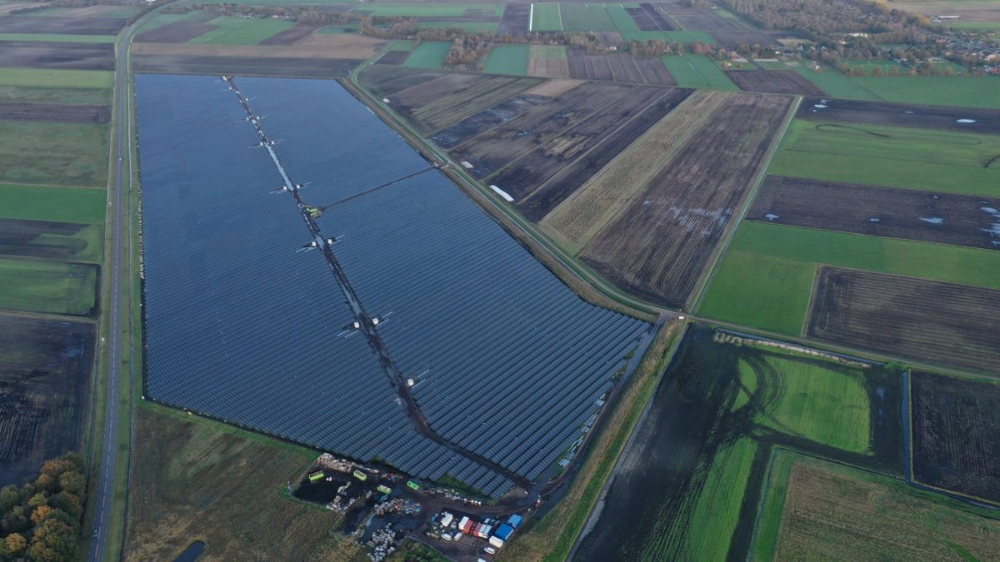

네덜란드 아선 협동조합 태양광 단지, 상계제도 폐지에 배터리 200만 유로 숙제…수익 기부 대신 저소득 가구에 싼 전기 직접 공급으로

조합원 300명 비영리 '아선스 굿', A28 아선베스트 나들목 옆 패널 2,800장 넘는 단지 설계 다시…2027년 1월 상계 폐지·역송 비용에 저장 없이는 사업성 없어, 배터리 설치엔 새 허가 필요
네덜란드 드렌테주 아선의 비영리 협동조합 '아선스 굿(Assens GOED)'이 추진하는 사회적 태양광 단지가 전국 상계제도 폐지로 배터리 없이는 사업성이 나오지 않게 되면서 설계를 다시 하고 있다. 조합은 A28 고속도로 아선베스트(Assen-West) 나들목 옆에 패널 2,800장 넘게 깔아, 25년 동안 예상되는 수익 200만 유로를 지역 빈곤 해소와 주민 에너지 전환 지원에 쓰고 구체적인 쓰임새는 조합원 300명이 함께 정할 계획이었다. 그러나 생산량과 사용량을 서로 빼 주던 상계제도가 2027년 1월 1일 없어지고 쓰고 남은 태양광 전기를 망으로 보내는 데 역송 비용이 붙으면서, 낮에 만든 전기를 그대로 망에 내보내는 방식으로는 수지가 맞지 않게 됐고 단지 건설도 늦어지게 됐다. 사업을 제안한 무세타 블라우(Musetta Blaauw)는 현장에 배터리를 두고 낮에 만든 전기를 저장했다가 사람들이 집에 있는 시간에 공급하는 새 설계가 거의 마무리됐다면서도, 배터리 값만 약 200만 유로이고 설치하려면 새 허가를 받아야 해 재원 마련 방안을 찾고 있다고 밝혔다. 이익을 나누는 방식도 바뀌어, 수익을 좋은 일에 기부하는 대신 배터리에 담은 전기를 소득이 낮고 에너지 비용 부담이 큰 가구에 조합이 최대한 싼 값으로 직접 공급하는 방향을 잡았다. 대신 이 가구들은 보일러·히트펌프 같은 스마트 기기의 제어권을 조합에 맡겨 생산이 많은 때 기기를 돌리게 해야 하며, 블라우는 낮에 보일러 물을 더 데워 두었다가 저녁 샤워에 쓰게 하는 방식을 암스테르담에서 이미 만들어 봤다고 설명했다.
시민에너지 관점
조합원 300명이 25년 동안 200만 유로를 지역에 돌리려던 계획이 거의 같은 액수의 배터리 비용 앞에서 멈춘 것은, 제도 하나가 바뀌면 시민 태양광의 셈법이 통째로 흔들린다는 점을 보여 준다. 저장 설비를 더하면 사업비만 불어난다는 우려가 나올 수 있지만, 낮에 남는 전기를 저녁에 이웃이 쓰게 하면 전력망 부담을 덜면서 에너지 비용에 허덕이는 가구의 요금까지 낮추는 두 가지 효과를 함께 노릴 수 있다. 수익을 나눠 주는 데서 그치지 않고 전기 자체를 이웃에게 싸게 대는 선택은 지역 주민이 발전 설비의 주인일 때만 할 수 있는 일이다. 국내 마을 태양광과 시민 발전 사업도 제도 변화에 흔들리지 않도록, 저장 설비와 에너지 취약 가구 직접 공급을 사업 설계 단계부터 넣을 수 있게 지원 제도를 서둘러 갖춰야 한다.
출처: RTV Drenthe 2026-11-05 Hjalmar Guit 원문 보기
オランダ・アッセンの協同組合太陽光発電所、相殺制度廃止で200万ユーロの蓄電池が課題に…収益の寄付から低所得世帯への安価な電力の直接供給へ
組合員300人の非営利組合「アッセンス・フード」、A28アッセン西インターチェンジ脇のパネル2,800枚超の発電所を再設計…2027年1月の相殺制度廃止と逆潮流費用で蓄電なしでは採算合わず、蓄電池設置には新たな許可が必要
オランダ・ドレンテ州アッセンの非営利協同組合「アッセンス・フード（Assens GOED）」が進める社会的太陽光発電所が、全国の相殺制度（ネットメータリング）の廃止で蓄電池なしでは採算が取れなくなり、設計をやり直している。組合はA28高速道路のアッセン西（Assen-West）インターチェンジ脇に2,800枚を超えるパネルを並べ、25年間で見込まれる収益200万ユーロを地域の貧困対策と住民のエネルギー転換支援に充て、具体的な使い道は組合員300人で一緒に決める計画だった。しかし発電量と使用量を差し引きしていた相殺制度が2027年1月1日になくなり、使い切れずに送電網へ戻す太陽光電力に逆潮流費用がかかるようになったため、昼間に作った電気をそのまま網に流す方式では採算が合わなくなり、発電所の建設も遅れることになった。事業を提案したムセッタ・ブラウ（Musetta Blaauw）氏は、現地に蓄電池を置いて昼に作った電気をため、人々が家にいる時間帯に供給する新設計はほぼ固まったとしながらも、蓄電池だけで約200万ユーロかかり、設置には新たな許可が必要なため資金の手当てを探っていると明らかにした。利益の分け方も変わり、収益を慈善に寄付する代わりに、蓄電池の電気を所得が低くエネルギー費の負担が大きい世帯に組合ができるだけ安く直接供給する方向に切り替えた。その代わり対象世帯はボイラーやヒートポンプなどスマート機器の制御権を組合に預け、発電が多い時間帯に機器を動かせるようにする必要があり、ブラウ氏は昼にボイラーの湯を多めに沸かして夜のシャワーに使う仕組みをアムステルダムですでに作ったと説明した。
市民エネルギーの視点
組合員300人が25年で200万ユーロを地域に還元しようとした計画が、ほぼ同じ額の蓄電池費用の前で止まったことは、制度が一つ変わるだけで市民太陽光の採算が根本から揺らぐことを示している。蓄電設備を加えれば事業費が膨らむだけだという懸念もありうるが、昼に余った電気を夕方に近隣が使えば、送電網の負担を減らしつつエネルギー費に苦しむ世帯の料金まで下げるという二つの効果を同時に狙える。収益を配るだけでなく電気そのものを近隣に安く届けるという選択は、地域住民が発電設備の持ち主であって初めてできることだ。韓国の村の太陽光や市民発電事業も制度変更に揺らがないよう、蓄電設備とエネルギー弱者世帯への直接供給を事業設計の段階から組み込める支援制度を急いで整えるべきだ。
出典: RTVドレンテ（RTV Drenthe） 2026-11-05 Hjalmar Guit 原文を読む
荷兰阿森合作社光伏电站因净计量制度取消面临200万欧元储能难题…由捐赠收益转向直接向低收入家庭供应廉价电力
拥有300名社员的非营利合作社"阿森斯·胡德"重新设计A28阿森西出入口旁逾2,800块光伏板的电站…2027年1月净计量取消加上回送电网费用，无储能难以盈利，安装电池还需新许可
荷兰德伦特省阿森市的非营利合作社"阿森斯·胡德"（Assens GOED）推进的社会公益型光伏电站，因全国净计量（抵扣）制度取消、没有电池便无法盈利，正在重新设计。合作社原计划在A28高速公路阿森西（Assen-West）出入口旁铺设逾2,800块光伏板，把25年间预计约200万欧元的收益用于当地扶贫和支持居民能源转型，具体用途由300名社员共同决定。但抵扣发电量与用电量的净计量制度将于2027年1月1日取消，用不完而回送电网的光伏电力还要支付回送费用，白天发的电直接送入电网的模式已无法收支平衡，电站建设也因此推迟。项目发起人穆塞塔·布劳（Musetta Blaauw）表示，在现场设置电池、把白天发的电储存起来、在人们回家后供电的新设计已基本定稿，但仅电池就需约200万欧元，安装还须取得新许可，目前正在寻找资金来源。收益分享方式也随之改变：不再把收益捐给公益事业，而是由合作社把电池里的电以尽可能低的价格直接供应给收入低、能源开支负担重的家庭。作为条件，这些家庭须把热水器、热泵等智能设备的控制权交给合作社，以便在发电多的时段运行设备；布劳介绍，她们已在阿姆斯特丹建成这样的系统，例如白天把热水器的水多加热一些，留到晚上洗澡用。
市民能源视角
300名社员原想在25年里把200万欧元回馈地方，却在几乎同等金额的电池费用面前停下脚步，这说明制度一变，市民光伏的账就会被整个改写。有人可能担心加装储能只会推高项目成本，但让白天多余的电在傍晚供邻居使用，既能减轻电网负担，又能降低能源开支沉重家庭的电费，可谓一举两得。不止分配收益、而是把电本身廉价供给邻里，这样的选择只有在当地居民是发电设施主人时才可能做到。韩国的村庄光伏和市民发电项目也应尽快建立支持制度，让储能设施和向能源弱势家庭直接供电能在项目设计阶段就纳入，以免被制度变化左右。
来源: RTV德伦特（RTV Drenthe） 2026-11-05 Hjalmar Guit 查看原文
Assen co-op solar park in the Netherlands faces a 2 million euro battery bill as net metering ends, and shifts from donating profits to supplying cheap power directly to low-income households
Non-profit Assens GOED, with 300 members, redesigns its park of more than 2,800 panels by the A28 Assen-West junction; with net metering ending in January 2027 and feed-in charges, it no longer pays without storage, and the battery needs a new permit
A social solar park planned by Assens GOED, a non-profit cooperative in Assen in the Dutch province of Drenthe, is being redesigned because the end of national net metering means it can no longer pay its way without a battery. The cooperative planned to lay more than 2,800 panels beside the Assen-West junction of the A28 motorway and to spend an expected 2 million euros in income over 25 years on fighting local poverty and helping residents with the energy transition, with its 300 members deciding together exactly where the money would go. But net metering, which offsets generation against consumption, disappears on January 1, 2027, and solar power that is not used and flows back to the grid now carries feed-in charges, so simply exporting daytime power no longer adds up and construction of the park will be delayed. Initiator Musetta Blaauw said a new design, with an on-site battery that stores daytime power and supplies it when people are at home, is almost finished, but the battery alone costs about 2 million euros and needs a new permit, so the cooperative is still working out how to finance it. The way benefits are shared is changing too: instead of donating income to good causes, the cooperative intends to supply power from the battery as cheaply as possible directly to households with low incomes and high energy costs. In return, those households would have to hand control of smart appliances such as boilers and heat pumps to the cooperative so they run when output is high, and Blaauw said such a system, for example heating a boiler more during the day so there is warm water for an evening shower, has already been built in Amsterdam.
Citizen Energy View
A plan by 300 members to return 2 million euros to their community over 25 years has stalled in front of a battery bill of almost the same size, showing how a single rule change can upend the economics of citizen solar. Some will worry that adding storage only inflates costs, but letting neighbours use surplus daytime power in the evening can both ease pressure on the grid and cut bills for households struggling with energy costs. Going beyond sharing profits to supplying the electricity itself cheaply to neighbours is a choice only possible when local people own the generating assets. Korea should move quickly to build support schemes so that village and citizen solar projects can include storage and direct supply to energy-vulnerable households from the design stage, rather than being thrown off course by every policy change.
Source: RTV Drenthe 2026-11-05 Hjalmar Guit Read the original